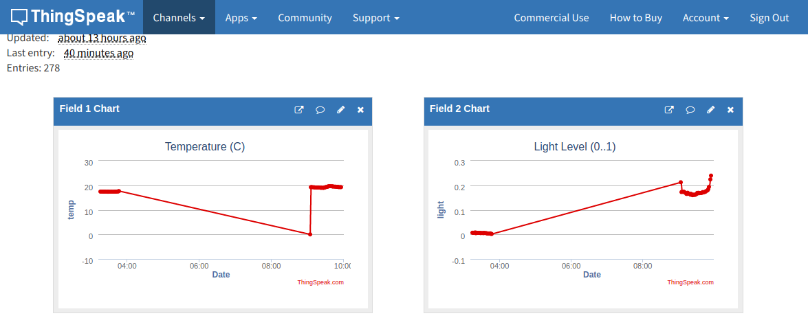
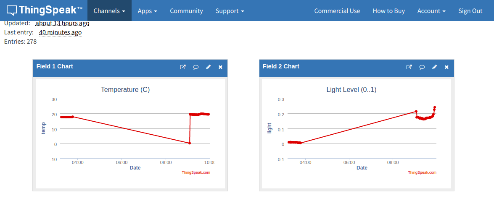
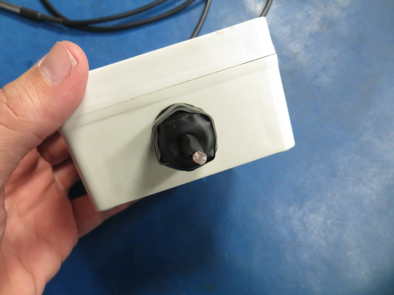
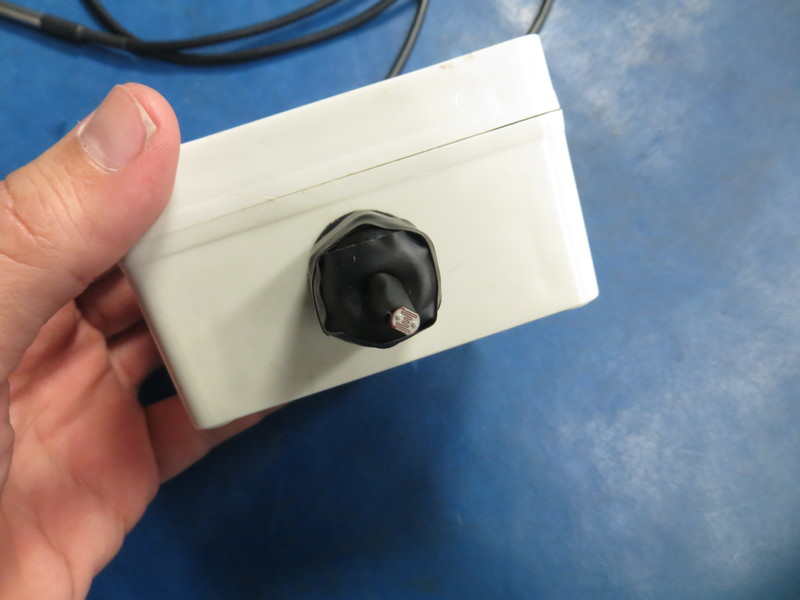
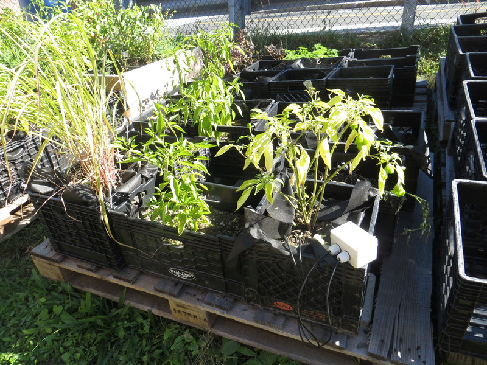
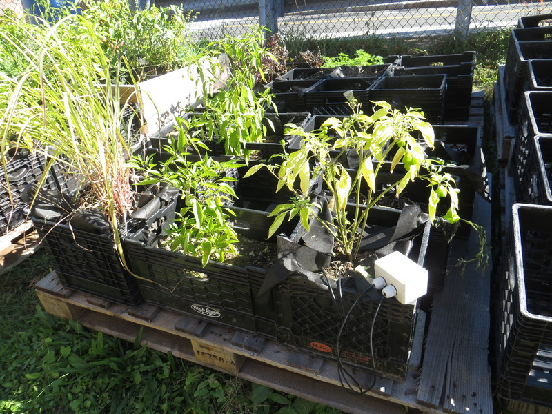
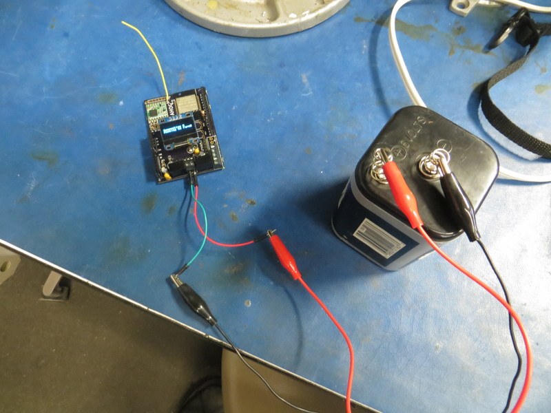
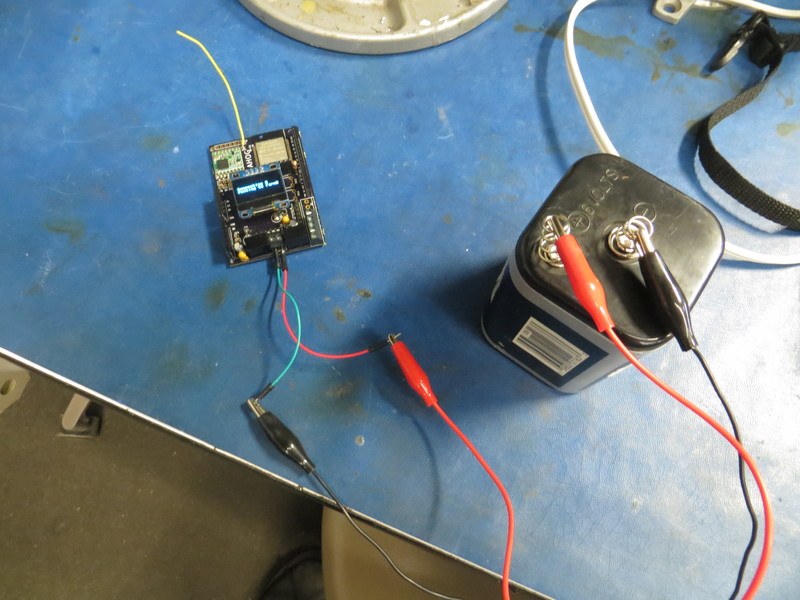
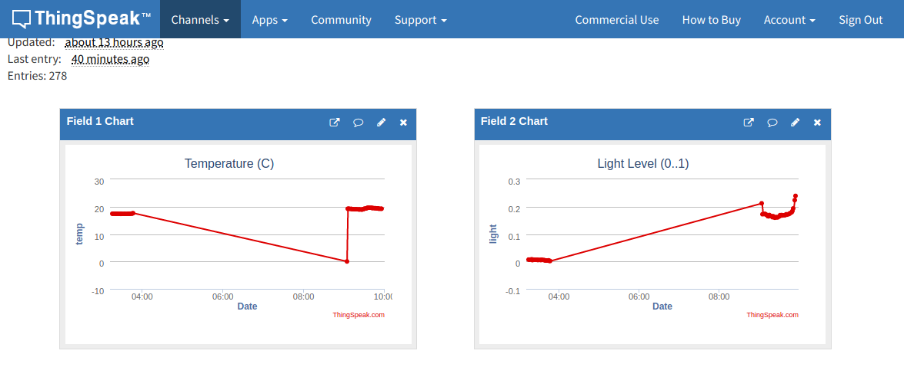

We're using a battery-powered Adafruit Feather microcontroller as as a remote instrument to measure temperature, light, and its own battery level. For sensors, we're using a DS18B20 'onewire' probe to measure temperature, and a simple light-dependent resistor to measure light level.
 


 



This remote sensor periodically sends these measurements via LoRa radio to a Quahog microcontroller -- which in this setup is acting as a LoRa/wifi gateway, receiving messages from the Feather via LoRa, and posting them online via wifi.
 

The Quahog can store data locally to an SD card; in the current setup, the Quahog is posting the measurements it receives from the remote sensor (via LoRa) to 'cloud-based' servers (via wifi) -- both to FarmOS and to ThingSpeak.com (at Feed ID= 607062).

The graphs below are plotted using the Plotly.js library. Currently, the data is being pulled from ThingSpeak's data API. To fetch the most recent 10 datapoints from ThingSpeak's feed id=607062, one can use a 'GET' request of the form:
https://api.thingspeak.com/channels/607062/feeds.json?results=10
Plots are updated every 60 seconds (when feed is 'live').
References for enabling 'timeouts' in Micropython HTTP POST functions (TODO):